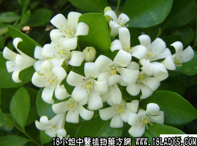

九里香(中药材植物名:九里香)(植物科目:芸香科)

植物名：九里香。
生长环境：本品为灌木或小乔木。生于山地或栽培于庭园，广州尤多。
分布：我国南部地区，此外越南、印度、马来西亚均有分布。
入药部分：叶。
采集期：全年。
自采地点：家种。
性味：性平、味苦。
功能：止痛、止血。
主治、用量和用法：1、跌打：生用叶适量，捣烂，加酒煮热外敷；2、蛇咬生用叶2两，擂烂加酒炖半小时，酒内服，渣外敷患处；3、牙痛：生用枝叶1两至两半（或干用5至1两），清水煎服。
验方：（治跌打瘀肿方）九里香5钱、透骨消4钱、血见愁4钱、黑老虎4钱、金牛根4钱、清水三碗半，煎成一碗冲酒服。
（方解）九里香芳香止痛、黑老虎、入地金牛行气活血、透骨消入骨骼散瘀，血见愁入血份、凉血，合为行气活血，止痛消肿之剂。
（方歌）跌打瘀肿痛红伤，血见愁添九里香，透骨金牛黑老虎，瘀散血行效益彰。
附录：（根）治蛇咬：干根1两至两半，清水煎，加酒冲服。